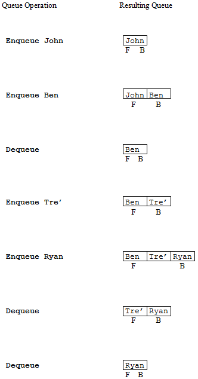

In America, a waiting line, such as the kind you encounter at a bank or supermarket, is simply referred to as a “line”. In Britain, a waiting line is called a “queue” (pronounced like the letter “Q”). illustrates a real-world queue that you might encounter at a local movie theater. John is buying a ticket to see the next Star Wars movie. Ben, Tre’ and Ryan are waiting in line to buy their tickets. The three of them are thus considered to be waiting in the queue. Since John is in the process of buying his ticket, he is not considered to be part of the queue – he is not “waiting”. Ben is at the front, or head, of the queue. He will be the next person to be served. Ryan is at the back, or end, of the line. He must wait for everyone ahead of him to be served before he gets to buy his ticket.
Queues are known as First-In, First-Out (FIFO) structures. Assuming no one “breaks” in line, the first person to enter the queue will be the first person leave the queue (and thus be the first one served). Queues are extremely useful, both in the real-world and in computing, because they enable us to control access to scarce resources, such as Star Wars tickets in the current example.
The queue data structure models the behavior of real-world queues. It supports two primary operations: “enqueue” and “dequeue”. The enqueue operator is used to add a new item to the back of the queue. This operator is analogous to a person getting in line. The dequeue operator is used to remove an item from the front of the queue. This operation is analogous to having the person at the head of the line step forward to be served.
More formally, a queue is a list in which all insertions take place at one end, the back of the queue, and all deletions take place at the opposite end, the front or head of the queue. The basic queue data structure does not allow the insertion or deletion of items from the middle of the list. Thus, it does not support concepts like people “breaking” in line or giving up and leaving because the line to too long.
Operations on a Queue
presents a sequence of operations applied to an initially empty queue, and illustrates the resulting queue configurations. In order to help you clearly distinguish between the behavior of stacks verses queue, uses the same data presented in along with the same pattern of operations applied to the structure. Notice that even though the order of operations is the same in both of these figures, the contents of the two structures is quite different.